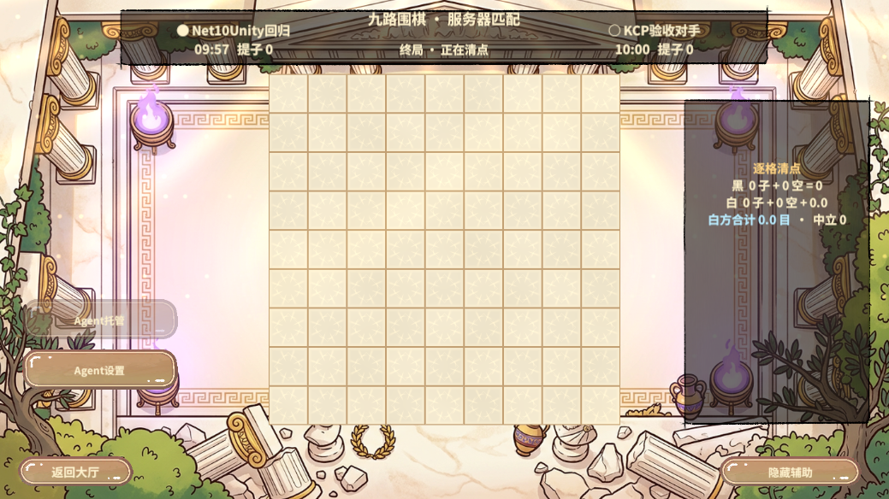

房间与会话归属
Gate 保留会话、认证席位和已确认的围棋同步历史。决斗挑战走房间已有的 Battle Address，Battle 用本地权威棋盘计算挑战资格，并持有选角、加载屏障、输入邮箱、原生实例及补帧历史。每个 Battle 最多一个 10 ms 调度器，推进双席就绪的房间。原生逻辑仍按 50 ms 步长。关闭房间释放原生实例。终局历史保留至关房，供两席对账。
内网请求携带 Gate 分配的席位代际。断线或换 Socket 后清空待封口输入。新连接重新 Ready 才继续原连续帧。外网消息和客户端代码沿用现有版本。Gate 和 Battle 需要配套更新。
首次落子的近一秒尖峰
两次迁移前的 80 人复现中，首手最慢样本总耗时 877.84–1011.64 ms。其中从 Gate 提交到 Battle 回包的区段占 854.00–970.64 ms。迁移后保留按需建链作对照，首手仍达到 1053.79–1089.25 ms。最慢样本来自不同房间的第一轮提交。
Fantasy 第一次访问某个远端 Scene 会在当前调用中建立 TCP 会话。版本 2026.1.2003 在 ConnectAsync 前以 1 KiB 为步长探测收发缓冲。用同一包直接测本机 8 次设置耗时 131.68–202.24 ms，实际环回连接 0.14–1.58 ms。四个远端 Scene 在第一波首次建链，后到的房间连同前面尚未派发的回包一起等待。实现将这部分成本移到 Gate 的预连接阶段，收到业务就绪回包后才把远端节点纳入分配。默认同进程的 Battle 仍走 Fantasy 进程内路由。
上一轮 · 在 .NET 8 上定位并处理首次建链
两 OS 进程，单 Gate 持有外部连接，四个 Battle 在另一进程。单规则桶，隔离测试的空闲窗口 30 秒，默认配置沿用 8 秒。决斗切入前提交 24 手合法局面并走完选角、加载与 Ready。每座位提交 68 波决斗输入，目标间隔 50 ms，依实际波次完成有界推进。围棋房每局 32 手加双停。客户端和 Gate 以房号与序号关联单调时钟。首手统计包括决斗房的准备棋谱，稳定阶段单列实际混合时的 RPC。
| 版本 / 客户端 | 围棋房 / 决斗房 | 所有房间首手 P99 | 混合围棋 P99 | 决斗输入 P99 |
|---|---|---|---|---|
| 原版 / 80，第一轮 | 24 / 16 | 1011.64 ms | 29.53 ms | 28.21 ms |
| 原版 / 80，第二轮 | 24 / 16 | 877.84 ms | 29.70 ms | 25.98 ms |
| 仅迁移 / 80，第一轮 | 24 / 16 | 1089.25 ms | 31.50 ms | 27.64 ms |
| 仅迁移 / 80，第二轮 | 24 / 16 | 1053.79 ms | 30.56 ms | 27.78 ms |
| 预连接 / 80，四次中间版复跑范围 | 24 / 16 | 53.24–126.19 ms | 29.93–89.57 ms | 32.33–80.56 ms |
| 交付版 / 80 | 24 / 16 | 56.99 ms | 30.65 ms | 28.84 ms |
| 原版 / 320 | 96 / 64 | 845.16 ms | 39.08 ms | 46.20 ms |
| 预连接 / 320，首轮 | 96 / 64 | 60.86 ms | 40.92 ms | 41.15 ms |
| 交付版 / 320 | 96 / 64 | 62.24 ms | 44.63 ms | 58.07 ms |
交付版 320 人轮完成 3,264 条围棋操作和 8,704 条决斗输入，64 局决斗均通过第 40 帧双席核对，最低连续执行到第 70 帧。首手 P99 比基线下降 92.6%。稳态围棋 P99 增加 5.55 ms，决斗输入 P99 增加 11.87 ms。决斗轮询间隔 P99 从 75.29 ms 增至 85.64 ms。稳定阶段的数据包含真实多一跳的代价及同机波动，当前结果支持冷首手专项收益。
压测中两席独立驱动原生副本，按相同连续帧分别上报第 40 帧指纹。围棋侧全员收到同一终局指纹。决斗侧逐席离场通过。跨进程双席回归覆盖拒绝非法挑战、加载屏障、无输入持续封帧、换 Socket、停帧、重新 Ready、周期指纹和终局指纹。TCP 回归覆盖合法落子、错误指纹后正确重试、棋力匹配和房间容量。
本轮 · 仅改变服务器的 .NET 版本
使用同一份决斗权威迁移及预连接代码，分别发布为 .NET 8.0.32 和 .NET 10.0.15。两组复用相同的 .NET 8 KCP 探针，各档按 8 → 10 → 10 → 8 顺序跑，每次重新启动 Battle 进程和 Gate 进程。所有端在同一台 Windows x64 / i7-12700H 主机上，Gate 外部端口为 KCP 回环，内网为 TCP 回环。单规则桶，测试的 Session 空闲阈值为 30 秒。
80 人档为 24 局围棋和 16 局决斗。320 人档为 96 局围棋和 64 局决斗。围棋房每局做 32 手落子和双停，每个决斗房用 24 手合法棋谱达成挑战门槛，完成双方加载与 Ready，再按 50 ms 目标节拍提交每席 68 波输入。每档的其余参数与上一轮一致。
| 客户端数 | 服务端 / 轮次 | 首手 P99 | 围棋 P99 | 决斗输入 P99 | 决斗回复间隔 P99 |
|---|---|---|---|---|---|
| 80 | .NET 8 / 1 | 48.42 ms | 29.95 ms | 27.30 ms | 65.33 ms |
| 80 | .NET 10 / 1 | 60.49 ms | 29.39 ms | 29.14 ms | 65.16 ms |
| 80 | .NET 10 / 2 | 60.66 ms | 30.71 ms | 29.90 ms | 64.32 ms |
| 80 | .NET 8 / 2 | 53.37 ms | 27.91 ms | 27.89 ms | 68.41 ms |
| 320 | .NET 8 / 1 | 88.56 ms | 41.98 ms | 42.65 ms | 79.70 ms |
| 320 | .NET 10 / 1 | 60.80 ms | 37.50 ms | 34.46 ms | 68.66 ms |
| 320 | .NET 10 / 2 | 116.04 ms | 41.48 ms | 35.78 ms | 71.11 ms |
| 320 | .NET 8 / 2 | 86.96 ms | 31.96 ms | 31.39 ms | 71.54 ms |
首手 P99 对所有房间的第一条操作取分位，包含决斗房的准备棋谱。围棋 P99 只统计混合阶段的围棋操作，决斗输入 P99 用当前输入 RPC 往返计算。80 人每轮确认 816 条围棋操作和 2,176 条决斗输入，320 人每轮确认 3,264 条围棋操作和 8,704 条决斗输入。每个围棋房均得到一致终局，每个决斗房的双席副本均与权威核对第 40 帧指纹，所有客户端完成离场。
.NET 10 的 320 人首手仍有 60.80–116.04 ms 的轮次波动。其中 P99 样本的 Gate 到 Battle 区段是 40.10–74.61 ms。旧版没有预连接时的近一秒尖峰没有出现。两种运行时的稳态样本接近，当前轮次数量不足以证明 .NET 10 自身改善延迟。
发布产物与联机回归
- 以 SDK 10.0.404 发布 win-x64 服务端，运行目录包含 Hotfix DLL 和 PDB、Fantasy.config、以及原生 RevGameCore.dll。服务端与探针编译均为 0 错误，复现了原有共享 GoCore 的 7 条可空性警告。
- 真实 KCP 两席决斗探针在默认单进程和 Gate/Battle 同机双进程均通过。补测重复挑战后，两轮分别在第 113 和 124 帧确认终局。用 .NET 8 探针连接新版双进程也通过，第 79 帧确认终局。每轮都经过正常挑战、选角和加载、换 Socket、旧帧续接、周期与终局指纹及离场。
- TCP 的 smoke、ranking 和 capacity 均通过，覆盖围棋身份绑定、错误指纹拒绝后正确重试、恢复与收尾、棋力匹配和 128 个活跃房间上限。TCP 是隔离诊断用拓扑，发布默认走 KCP。
Unity 2022.3.15f1c1 完整重编译结束后，通过正式对战入口连接双进程服务端。RevMCP 依次以 rev_discover 发现 pvp.*，用 rev_call pvp.state 核对空闲大厅，经 rev_run 进入九路围棋、连接 127.0.0.1:20000 并和独立 KCP 对手配房。首次验收在棋盘可见之前就触发断言，复测改为等待 battleVisible=true。双方各停一手，终局序号为 2，指纹均为 8331241237952954415。清理通过，回到大厅并退出 Play。Unity 画面验收覆盖围棋，决斗由两席 KCP 探针覆盖。

这些数据覆盖同机回环和单 Gate。腾讯云公网、跨主机私网、运行中 Battle 故障接管和多 Gate 容量需要在对应环境另测。原始计时与日志保留于 .codex/work/duel-distribution 和 .codex/work/fantasy-net10-20261114。